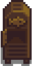
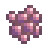
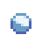
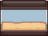
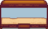
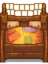

Halbolt
| Halbolt | |
 | |
| Nyitvatartás: | Reggel kilenctől délután ötig |
| Zárva: | Nem esős szombatokon (az épület nyitva, de nincsen árusítás) |
| Lakók: | |
A halbolt Willy otthona. A stardon lévő kikötőnél található, délre Pelikán várostól. A boltba be lehet lépni a tavasz második napján az első évben. Annak ellenére, hogy a bolt ajtaja nyitva van szombatonként a bolt nem árusít, hacsak nem esik, kivéve a tél 13. napját, ami a tintahal fesztivál második napja.
Willy sokféle horgászással kapcsolatos dolgot árul, úgy mint botokat, csalikat, horgászcsalikat, haltartályokat és rákvarsát. Néhány tárgy, például a horgászcsalik, akkor lesznek elérhetők, ha a játékos elér egy bizonyos horgászási szintet. Ezek a tárgyak azonnal megvásárolhatóak, amint elértük a megfelelő szintet, nem szükséges megvárni a következő napot. Más tárgyak megjelenése, úgy mint a réz serpenyőjé és a Luxus haltartályé speciális feladatok teljesítése után történik meg.
Készlet
Ezek a termékek azonnal kaphatóak, amint megnyit a halbolt: Pisztráng leves, Bambusz bot, Edző bot, Kicsi haltartály, Nagy haltartály, és Horgász dupla ágy.
| Kép | Név | Leírás | Ár | |
|---|---|---|---|---|
 |
Halfüstölő (recept) | Egy recept, amiből ez készíthető: Halfüstölő | N/A | |
| Pisztráng leves | Elég sós. | N/A | ||
| Csali | Segítségével a halak gyorsabban harapnak. Előbb egy horgászbotra kell helyezni. | 2 | ||
| Luxus csali | Segítségével a halak méggyorsabban harapnak, és megnöveli a "horgászós csík" méretét. | 4 | ||
|  | Illő csalit | ?
Willy korlátozott mennyiségben árul minden nap egy-egy specifikus illő csalit (pl.: harcsa csali, szardínia csali) a csali árának kétszereséért. Lásd az illő csali szekciót további információkért. |
N/A | |
| Rákvarsa | Rakd a vízbe, töltsd meg csalival, és nézd meg másnap, hogy fogtál-e valamit. Folyókban, tavakban és óceánokban is működik. | 3 | ||
| Szonárúszó | Megmutatja, hogy milyen hal akadt a horogra, mielőtt kifognád. | 6 | ||
| Műcsali | Az alakja miatt pörög a vízben. Kissé megnöveli horgászás közben a halak harapási esélyét. | 6 | ||
| Csapdaúszó | A halak lassabban menekülnek el, mikor épp nem tekered be őket. | 6 | ||
|  | Ólom úszó | Súlyt ad a "horgászós csíkodhoz" így nem fog az alján pattogni. | 6 | |
| Kincsvadász | A halak nem menekülnek el, ha épp kincsre vadászol. Továbbá kissé megnöveli a kincstalálási esélyt. | 7 | ||
| Parafa úszó | Kissé megnöveli a "horgászós csíkod" méretét. | 7 | ||
| Éles kampó | A fogásodat jobban bebiztosítja, így a "horgászós csík" rátapad a fogásodra. A lassú, gyenge halakkal működik igazán. | 8 | ||
| Díszes műcsali | A fémes és színes része remekül csalogatja magához a halakat. Megnöveli horgászás közben a halak harapási esélyét. | 8 | ||
| Mágnes | Megnöveli horgászás közben a kincstalálási esélyt. Sajnos a halak nincsenek oda az ízéért. | 9 | ||
| Bambusz bot | Használd a vízben, hogy halakat fogj ki. | N/A | ||
| Edző bot | Sokkal könnyebb használni mint a többi botot, de csak alap halakat képes kifogni. | N/A | ||
| Üvegszálas pecabot | Használd a vízben, hogy halakat fogj ki. | 2 | ||
| Irídium pecabot | Használd a vízben, hogy halakat fogj ki. | 6 | ||
| Fejlett irídium horgászbot | Használd a vízben, hogy halakat fogj ki. Egyszerre két úszót is helyezhetsz rá. (Elérhető miután már megszereztünk egyet a mesterképességek barlangjából) |
N/A | ||
| Réz serpenyő | Segítségével érceket gyűjthetsz a folyókból. (Elérhető ha teljesítettük a haltartály csomagot) |
N/A | ||
|  | Nagy haltartály | Ez a házadba is helyezhető. | N/A | |
| Kicsi haltartály | Ez a házadba is helyezhető. | N/A | ||
|  | Luxus haltartály | Ez a házadba is helyezhető. (Elérhető ha teljesítettük a trópusi halak küldetést) |
N/A | |
| Lógó hal | Ez a házadba is helyezhető. | N/A | ||
|  | Horgász dupla ágy | Ez a házadba is helyezhető. | N/A |
Illő csali
Willy minden nap árul korlátozott mennyiségben (8-12 darab) illő csalit (pl.: Harcsa csali, Szardínia csali) a sima csali árának duplájáért. A Willy által árult csali fajtája az aktuális évszaktól függ. Lent látható a lista az összes Willy árulta csaliról évszakonkénti bontásban.
| Évszak | Lehetséges illő csali |
|---|---|
| Szardella csali, Szardínia csali, Keszeg csali, Nagyszájú sügér csali, Kisszájú sügér csali, Harcsa csali, Angolna csali, Lepényhal csali, Kőhal csali | |
| Gömbhal csali, Tonhal csali, Szardínia csali, Keszeg csali, Nagyszájú sügér csali, Szivárvány pisztráng csali, Csuka csali, Vörös márna csali, Polip csali, Szuper uborka csali, Lepényhal csali, Tokhal csali, Aranydurbincs csali, Tilápia csali, Jégpötty csali | |
| Szardella csali, Szardínia csali, Keszeg csali, Nagyszájú sügér csali, Kisszájú sügér csali, Lazac csali, Polip csali, Harcsa csali, Angolna csali, Éjfél ponty csali, Tilápia csali, Germon csali, Láva angolna csali | |
| Tonhal csali, Szardínia csali, Keszeg csali, Nagyszájú sügér csali, Süllő csali, Sügér csali, Harcsa csali, Csuka csali, Vörös márna csali, Tintahal csali, Szuper uborka csali, Éjfél ponty csali, Tokhal csali, Germon csali, Lingcod csali, Kőhal csali, Jégpötty csali, Láva angolna csali |
Vásárlások
Willy az alábbi tárgyakat veszi meg a játékostól: minden halat, csalit, horgászcsalit, tengerparti gyűjtögetéseket (kivéve a hínárt), ikrát, és tintahaltintát.[1]
Nem vesz meg semmi más kifogható tárgyat (Szemét, Zöld alga, Hínár, vagy Fehér alga). Szintén nem veszi meg az érlelt ikrát vagy a kaviárt.
Játékos eredetű készlet
Ha a játékos úgy dönt, hogy tárgyakat ad el Willy-nek, van esély rá, hogy ezek a tárgyak feltűnnek az eladó tárgyak között, különösen akkor, ha ezeket nagy mennyiségben ad el neki. Bármelyik ilyen tárgy korlátozott mennyiségban lesz elérhető. Kiegészítésként a falusiak párbeszédeiben megjelenik, hogy látták vagy vásárolták ezeket a tárgyakat.
Úszógép
A halboltban, jobb oldalon található az úszógép amiből a játékos választhat különféle úszóféléket. Amellett, hogy ki lehet választani specifikus úszókat, van lehetőség a véletlenszerű opciót választani, amikor az összes feloldott úszóból választ egyet a játék.
A játék kezdetén csak az alapértelmezett úszó választható. Egy-egy újabb úszó kerül feloldásra, minden második új kifogott hal után. Az új úszók mindig sorban kerülnek feloldásra. Például, a tizedik úszót a tizennyolcadik újfajta hal kifogása után kapjuk meg.
Összesen 39-féle úszóstílus oldható fel. Ahhoz, hogy az összes úszófajtát feloldja, a játékosnak 76 különböző halfajtát kell kifogni. A játékban összesen 77 féle különböző hal szerepel (ebből 72 hal látható a menü gyűjtemények fülén, és 5 a II. legendás hal).
Willy hajója
Bármikor, az első év nyarának első napján és miután teljesítettük a Közösségi központ csomagokat vagy megnéztük a Joja raktárépület teljesítése esetén feltűnő átvezető videót, ha belépünk a halboltba (akár ott van Willy, akár nincs) egy furfangos átvezető videó jelenik meg. Ebben a videóban Willy beszélget a játékossal a horgászati fejlődésükről, aztán megemlíti, hogy az üzlet a halboltban lehetne jobb is. Willy azt mondja, hogy nagyon komolyan dolgozik, ezért nincsen ideje a saját projektjeire. Azt mondja van egy "régi barátja", aki jobb napokat látott. Willy aztán céloz rá, hogy, hogyha az üzlet felpörög, akkor megmutatja a játékosnak, hogy mi is van a hátsó helyiségében.
Willy eztán küld egy meghívólevelet a játékosnak, hogy jöjjön el és nézze meg, hogy mi van a bolt hátsó helyiségében. Amint belép ide, egy mólót talál és egy javításra szoruló hajót. A hajó a Gyömbér-szigetre és onnan vissza adna szállítási szolgáltatást  1 000g-ért, de Willy-nek nincsenek meg az anyagai a felújításhoz.
1 000g-ért, de Willy-nek nincsenek meg az anyagai a felújításhoz.
Ahhoz, hogy a hajót megjavítsa, a játékosnak a következő tárgyakat kell beszállítania:
 Keményfa (200) a hajótesthez,
Keményfa (200) a hajótesthez, Irídium rúd (5) a horgonyhoz,
Irídium rúd (5) a horgonyhoz, Elem csomag (5) a jegyautomatához.
Elem csomag (5) a jegyautomatához.
Ha a játékos megcsinálja mind a három hajójavítást, akkor este lefekvés után, egy átvezető videó látható, amiben Willy és Robin dolgozik a hajó helyreállításán. Fontos tudni, hogy ezt az átvezető videót egy nappal később láthatjuk, ha van egy másik videó, amit ugyanerre az éjszakára ütemezett a játék.
Willy és Robin hajójavítása utáni naptól elkezdve hajójegyet lehet vásárolni a hátsó szobában. A halbolt ajtaja is reggel nyolckor nyit kilenc helyett. Willy saját napi rutinja ettől nem változik meg. A hajót vezeti, de automatikusan elérhető lesz, amint a játékos megveszi a jegyet és nem kell a boltban lenni előtte.
Ha bent, a csónak helységében horgászunk, akkor 20% esélye van, hogy egy mentőövet fogjunk ki.[2]
Apróságok
- A bolt hátsó részében található létrára klikkelve egy üzenet tűnik fel miszerint Willy lakik odafent.
- Ha a játékos az első évben, a tavasz első napján kisérel meg belépni a boltba, a következő jegyzet fogadja az ajtón: "Horgászni mentem. Holnap visszajövök."
- Miután a bolt bezár, Willy visszatér a halboltba, többnyire hajnali fél egy körül. Ha visszajött a boltba, akkor a pultnál fog állni. A játékos mindig be tud menni a boltba ez után is, ha éppen hazatér a Gyömbér-szigetről vagy használja a város kulcsát.
Galéria
Beltér
Hivatkozások
Előzmények
- 1.04: Javítva egy hiba, amiben a boltot egy vizi helyszínnek tekintette.
- 1.4: A játékostól származó készlet, amit Willy-nek adunk el, a halbolt menűjében válik elérhetővé és nem Pierre boltjában. Hozzáadva az edző bot és a réz serpenyő a bolt készletéhez.
- 1.5: A nagy haltartály, a kicsi haltartály, a luxus haltartály, és a horgász dupla ágy hozzáadva a bolt készletéhez. Willy hajója feltűnik.
- 1.6: A halfüstölő receptje, a luxus csali, a szonárúszó, a lógó hal, és korlátozott mennyiségban az illő csali hozzáadva a bolt készletéhez. Bevezetve az úszógép.
- 1.6.9: Mostantól a játékos beléphet a boltba a tavasz második napján, még akkor is, ha nem olvasta Willy levelét. Javítva a hiba, amikor a horgászati hatásnövelések engedték a bolt tárgyait korábban feloldani. Lehetségessé vált a fejlett irídium horgászbot megvásárlása, miután megszereztünk egyet a mesterképességek barlangjából.
| Épületek | ||
|---|---|---|
| Kereskedők | Ácsműhely • A Varázsló tornya • Jégkrémstand • Halbolt • Harvey klinikája • Hullócsillag szalon • JojaMart • Kalandorok céhe • Kaszinó • Kovács • Könyvkereskedő • Marnie tanyája • Oázis • Óriási tönk • Pierre boltja • Qi diós szobája • Romos ház • Sivatagi kereskedő • Szigeti kereskedő • Utazó szekér • Vulkáni törpe | |
| Házak | Elliott faháza • Faház • Folyó út 1 • Folyó út 2 • Fűzfa köz 1 • Fűzfa köz 2 • Hegyi út 24 • Lakókocsi • Leah kunyhója • Parasztház • Polgármester háza • Sátor | |
| Farm épületek | Gazdálkodás | Csűr • Halastó • Háziállat tálka • Istálló • Istálló (ló) • Kunyhó • Kút • Malom • Ragacsketrec • Raktár • Siló • Üvegház |
| Különleges | Arany óra • Farm obeliszk • Föld obeliszk • Junimo kunyhó • Sivatagi obeliszk • Sziget obeliszk • Víz obeliszk | |
| Egyéb | Boszorkány kunyhója • Fürdő • Joja raktárépület • Közösségi központ • Kutya karám • Mozi • Múzeum • Szigeti iroda | |